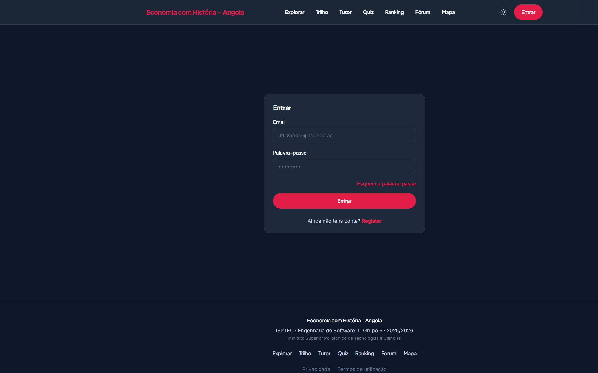
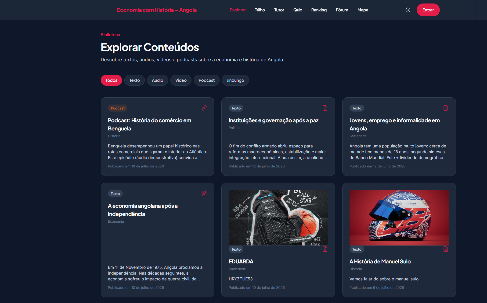
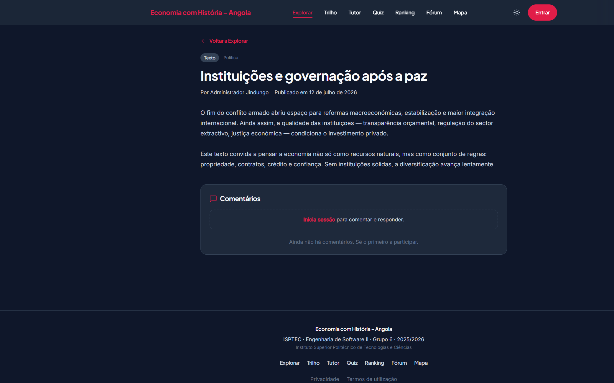
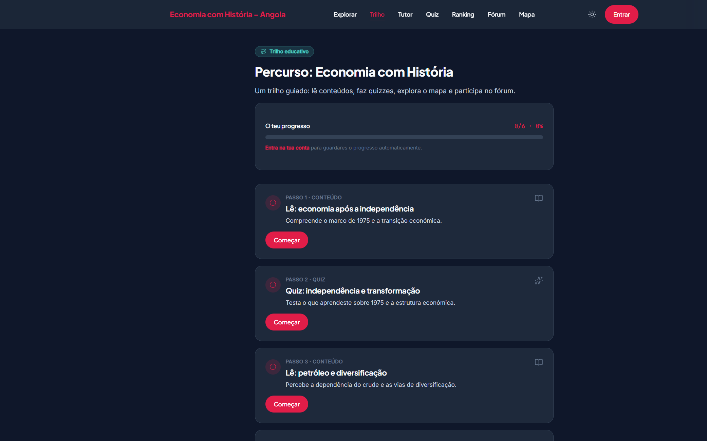
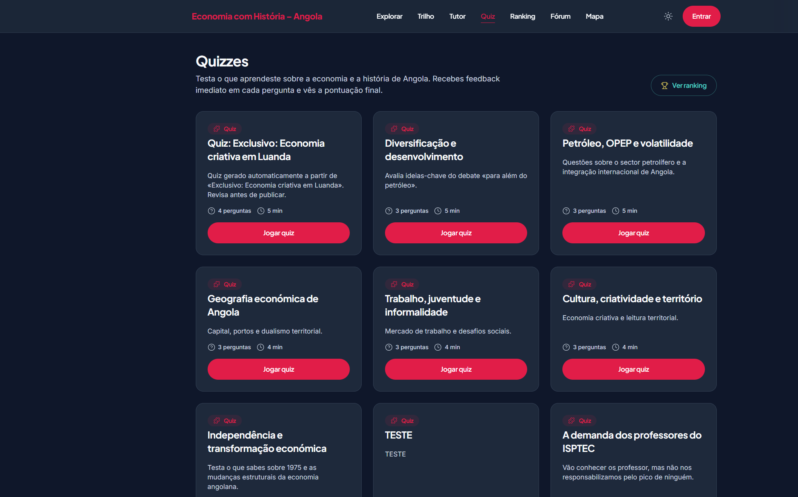
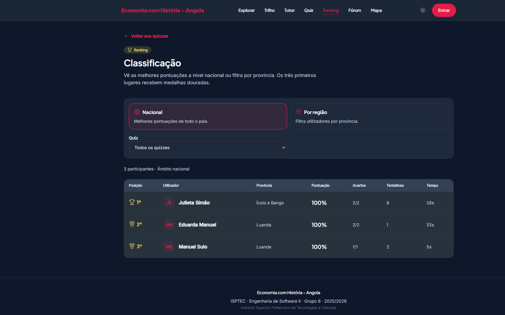
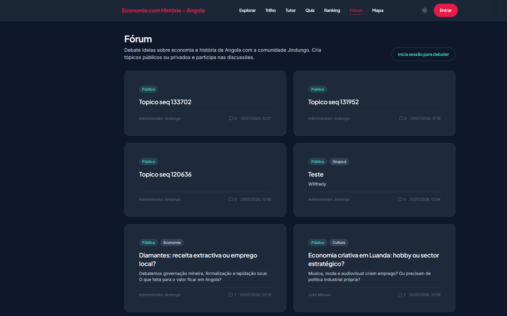
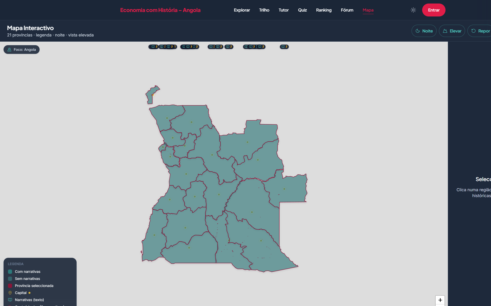
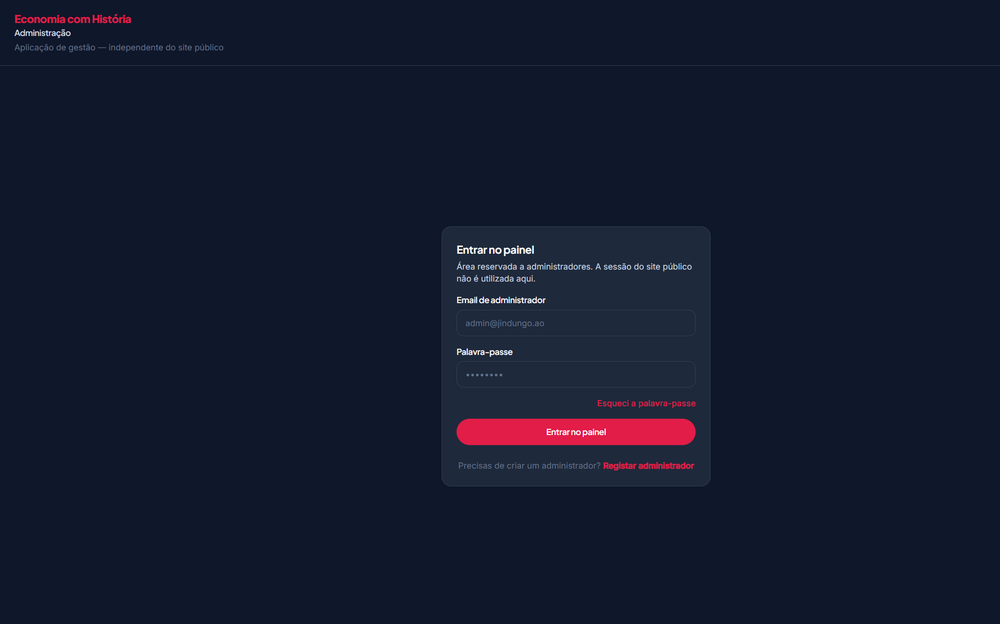

Este guia explica, com palavras simples e com imagens, como usar o site e a aplicação. Segue os passos um a um. Se vires uma imagem, compara com o teu ecrã — ajuda a não te perderes.
Instituto Superior Politécnico de Tecnologias e Ciências (ISPTEC) · Engenharia de Software II · Grupo 6 · 2025/2026
Criado pelo Grupo 6 · ISPTEC · ES II · 2025/2026 — Willfredy Vieira Dias, Manuel Sulo, Eduarda e Adelino
Sobre nós — Grupo 6
Plataforma educativa multimédia sobre a economia e a história de Angola — web, administração e aplicação móvel.
Missão: Tornar acessível, de forma interactiva e rigorosa, o conhecimento sobre a economia e a história de Angola, através de conteúdos multimédia, trilho educativo, tutor com IA, quizzes, fórum, mapa provincial e biblioteca exclusiva Jindungo.
Instituição: Instituto Superior Politécnico de Tecnologias e Ciências (ISPTEC)
Unidade curricular: Engenharia de Software II · 2025/2026
Stack: Backend Laravel (API REST + Sanctum), frontend Next.js, app móvel Expo/React Native, base de dados MySQL/PostgreSQL.
A equipa
Willfredy Vieira Dias
Engenharia full-stack · backend e web
API Laravel, Docker/CI, design system, autenticação, landing, painel de administração (conteúdos e utilizadores).
Contribuições na aplicação móvel Expo (experiência nativa, ecrãs e integração com a API).
Adraude2694@gmail.com
Adelino
Desenvolvimento mobile
Contribuições na aplicação móvel Expo (fluxos de utilizador, UI e testes em dispositivo).
adelinodo003@gmail.com
01
1. O que é esta aplicação?
Há um site, um telemóvel e uma zona só para o administrador.
Para que serve
Isto serve para aprenderes sobre a economia e a história de Angola, no computador ou no telemóvel.
O que podes fazer
Ver textos, vídeos e áudios sobre Angola.
Fazer quizzes (perguntas) e ver o ranking.
Falar no fórum e ver o mapa das províncias.
Pedir acesso a textos especiais (Jindungo).
Perguntar ao Tutor (IA) sobre os temas da plataforma (com conta).
O que não podes fazer
Não podes comprar coisas aqui — não há pagamentos.
No telemóvel não existe a zona de administrador.
Não envia mensagens tipo WhatsApp em tempo real.
A IA não faz tudo sozinha — vê a secção 9.
Como fazer
1
No computador
Abre o site no browser (Chrome, Edge, etc.). Em cima vês o menu: Explorar, Trilho, Tutor, Quiz, Ranking, Fórum, Mapa.
2
No telemóvel
Abre a app. Em baixo vês as abas: Explorar, Quiz, Fórum, Mapa e Perfil.
3
Exemplo
Queres ver um vídeo? Clica em Explorar → toca no filtro «Vídeo» → escolhe um cartão.
Vê o ecrã
Página inicial: o botão vermelho «Entrar» fica em cima, à direita.
02
2. Sem conta (só a olhar)
Podes ver muita coisa, mas não podes gravar progresso nem comentar.
Para que serve
Isto serve para conheceres o site antes de criares conta.
O que podes fazer
Ver Explorar (textos e vídeos públicos).
Ver o mapa e o ranking.
Ler o fórum (tópicos abertos).
O que não podes fazer
Não podes escrever comentários.
Não podes fazer um quiz com pontuação.
Não podes usar o Tutor nem a biblioteca Jindungo.
Como fazer
1
Como fazer
Entra no site e usa o menu. Quando algo pedir conta, aparece o botão «Entrar».
2
Exemplo
Abres o Fórum e lês. Se quiseres responder, o site pede para iniciares sessão.
03
3. Entrar e criar conta
Precisas de email e palavra-passe. É como entrar no email.
Para que serve
Isto serve para o site te conhecer e guardar o teu progresso.
O que podes fazer
Criar conta nova (Registar).
Entrar com email e palavra-passe.
Pedir nova palavra-passe se esqueceres.
Sair quando terminares.
O que não podes fazer
Não podes entrar com Google ou Facebook.
Não mistures a conta de aluno com a de administrador.
Como fazer
1
Entrar no site
Em cima à direita, clica no botão vermelho «Entrar». Escreve o teu email e a palavra-passe. Clica outra vez em «Entrar».
2
Ainda não tens conta?
Na mesma página, clica em «Registar». Preenche o nome, o email, a palavra-passe e a tua província. Depois entra.
3
Exemplo de conta de teste
Email: julieta@jindungo.ao — Palavra-passe: password (conta de utilizador normal).
4
Esqueceste a palavra-passe?
Clica em «Esqueci a palavra-passe», põe o email e segue as instruções.
Vê o ecrã

Ecrã «Entrar»: escreve o email, a palavra-passe e carrega no botão vermelho.
04
4. Explorar (biblioteca de conteúdos)
É a prateleira de materiais. Escolhes um cartão e abres.
Para que serve
Isto serve para encontrares textos, áudios, vídeos e podcasts.
O que podes fazer
Filtrar por tipo (Texto, Áudio, Vídeo, Podcast, Jindungo).
Abrir um conteúdo e ler ou ouvir.
Com conta: escrever comentários.
O que não podes fazer
Não podes criar conteúdos novos (só o administrador).
Sem acesso Jindungo, não abres os textos especiais.
Como fazer
1
Abrir Explorar
No menu de cima, clica em «Explorar». No telemóvel, toca na aba «Explorar».
2
Escolher um tipo
Clica num filtro redondo: Todos, Texto, Áudio, Vídeo, Podcast ou Jindungo.
3
Abrir um item
Clica no cartão que quiseres. Lê, ouve ou vê o vídeo.
4
Exemplo
Queres um podcast? Filtro «Podcast» → clica no cartão → carrega em play.
Vê o ecrã

Explorar: os filtros ficam sob o título. Os cartões são os conteúdos.
05
5. Dentro de um conteúdo
Abre o cartão e trabalhas na página do conteúdo.
Para que serve
Isto serve para leres ou ouvires o material completo e deixares um comentário.
O que podes fazer
Ler o texto ou usar o leitor de áudio/vídeo.
Com conta: comentar e responder a comentários.
Apagar só os teus comentários.
O que não podes fazer
Não apagas comentários de outras pessoas.
Sem conta não escreves comentários.
Como fazer
1
Como comentar
Entra com a tua conta. Desce até à zona de comentários. Escreve e envia.
2
Exemplo
Leste um texto sobre petróleo e queres perguntar algo → escreve o comentário e envia.
Vê o ecrã

Página de um conteúdo: o texto ou o leitor fica no centro.
06
6. Biblioteca Jindungo (textos especiais)
Pedes acesso → esperas → se for aceite, lês os textos.
Para que serve
Isto serve para textos exclusivos. Precisas de pedido aprovado pelo administrador.
O que podes fazer
Com conta: pedir acesso (podes escrever uma mensagem).
Ver se o pedido está a aguardar, aceite ou recusado.
Com acesso aceite: abrir os textos Jindungo.
O que não podes fazer
Sem conta não pedes acesso.
Enquanto esperas, não cries outro pedido.
Se o admin retirar o acesso, deixas de ver os textos.
Como fazer
1
Pedir acesso
Entra na tua conta. Vai a Explorar → filtro «Jindungo», ou abre a página Jindungo. Escreve uma mensagem (opcional) e carrega em «Pedir acesso».
2
Esperar
Vais ver «Pedido em análise». Não precisas de fazer mais nada.
3
Quando for aceite
Já não pedes de novo. Abres os textos normalmente.
4
Exemplo
És aluno e queres os textos extras da disciplina → pedes acesso → o professor (admin) aprova.
Vê o ecrã
Biblioteca Jindungo: se ainda não entraste, aparece o ecrã «Entrar». Depois pedes o acesso.
07
7. Trilho (caminho de aprendizagem)
É um percurso. Com conta, o progresso fica guardado.
Para que serve
Isto serve para te guiar passo a passo: conteúdo, quiz, mapa e fórum.
O que podes fazer
Ver os passos do trilho.
Com conta: marcar progresso e ver a percentagem.
O que não podes fazer
Sem conta o progresso não fica gravado.
Não mudas a ordem dos passos.
Como fazer
1
Abrir o Trilho
No site: menu «Trilho». No telemóvel: Perfil → Trilho educativo.
2
Seguir
Clica em «Começar» ou no passo indicado. Faz a actividade e volta ao trilho.
Vê o ecrã

Trilho: lista de passos e barra de progresso.
08
8. Tutor (assistente que responde perguntas)
Só funciona se estiveres com sessão iniciada. Lê também a secção 9 sobre a IA.
Para que serve
Isto serve para fazeres perguntas sobre economia e história de Angola e receberes uma resposta da IA.
O que podes fazer
Escrever uma pergunta.
Usar uma sugestão pronta.
Seguir ligações para conteúdos quando aparecerem.
O que não podes fazer
Sem conta não usas o Tutor.
O Tutor não substitui um professor e pode demorar se a internet estiver lenta.
Como fazer
1
Abrir
Entra na conta. No site: menu «Tutor». No telemóvel: Perfil → Tutor IA. Se ainda não entraste, o site mostra o ecrã de Entrar — entra primeiro e volta ao Tutor.
2
Perguntar
Escreve a pergunta (com algumas palavras) e envia. Exemplo: «O que é a diversificação económica em Angola?»
Vê o ecrã
Se ainda não entraste, o Tutor pede o ecrã «Entrar». Depois de entrares, voltas e fazes a pergunta.
09
9. A inteligência artificial (IA) — o que faz, pode e não pode
Há duas utilizações: o Tutor (para ti) e a ajuda a criar quizzes (só para o administrador).
Para que serve
Isto serve para saberes, em palavras simples, o que a IA faz nesta aplicação — e o que nunca faz sozinha.
O que podes fazer
No Tutor: ler a tua pergunta e procurar nos conteúdos publicados da plataforma.
No Tutor: responder em português de Portugal, de forma clara, e indicar fontes quando encontrar.
No Tutor: usar sugestões de perguntas prontas (ex.: sobre petróleo ou café).
No admin: propor um quiz (perguntas e respostas) a partir de um texto ou de um conteúdo.
Se a ligação à IA falhar: o Tutor ainda tenta dar uma resposta simples com base nos textos da biblioteca.
O que não podes fazer
Não inventa factos: se não houver base nos conteúdos, deve dizer que não encontrou informação suficiente.
Não substitui um professor, um livro oficial nem um exame.
Não publica conteúdos, quizzes nem respostas no fórum sozinha.
Não aprova pedidos Jindungo, não muda o teu perfil e não altera o ranking.
Não é chat tipo WhatsApp: não guarda conversas longas entre dias nem envia mensagens no telemóvel.
Não responde a perguntas fora do tema (economia/história de Angola na plataforma).
Não faz trabalhos escolares por ti nem dá respostas de exames oficiais.
Sem conta iniciada: o Tutor não funciona.
Só o administrador usa a geração de quizzes com IA — e tem de rever e guardar à mão.
Como fazer
1
O que a IA faz (resumo)
Ajuda a aprender: responde no Tutor com base nos textos da plataforma; e, no painel admin, sugere perguntas de quiz para o administrador rever.
2
Exemplo (aluno)
Perguntas: «Qual o peso do petróleo nas exportações?» → a IA lê conteúdos publicados → responde e pode mostrar ligações para leres mais.
3
Exemplo (administrador)
No admin, em Quizzes → «Gerar quiz com assistência de IA» → escolhe um conteúdo ou cola um texto → a IA propõe perguntas → tu corriges e só depois guardas.
4
Se a resposta parecer estranha
Lê os conteúdos indicados. Em dúvida, pergunta a um professor ou ao administrador. A IA pode errar ou ficar sem base se o tema não estiver na biblioteca.
Vê o ecrã
O Tutor é o sítio principal onde a IA fala contigo. Entra na conta, escreve a pergunta e compara a resposta com os conteúdos sugeridos.
10
10. Quizzes (perguntas e pontuação)
Vês a lista; para jogar a sério, precisas de conta.
Para que serve
Isto serve para testares o que aprendeste, com pontos e tempo (se houver).
O que podes fazer
Ver a lista de quizzes.
Com conta: responder, ver se acertaste e ver a pontuação final.
Repetir o quiz mais tarde.
O que não podes fazer
Sem conta não ficas no ranking.
Quando o tempo acaba, o quiz fecha.
Como fazer
1
Começar
Menu «Quiz» (ou aba Quiz no telemóvel). Escolhe um quiz → «Começar».
2
Responder
Escolhe uma opção → «Confirmar» → lê se está certa → «Seguinte».
3
Exemplo
Fazes o quiz «Petróleo» → no fim vês 80% → podes ir ao Ranking para te comparares.
Vê o ecrã

Lista de quizzes: escolhe um e começa.
11
11. Ranking (classificação)
Podes filtrar por país inteiro ou por província.
Para que serve
Isto serve para veres quem tem melhores resultados nos quizzes.
O que podes fazer
Ver a tabela sem conta.
Filtrar Nacional ou Por região.
Filtrar por quiz.
O que não podes fazer
Não mudas a pontuação à mão.
Sem quizzes feitos com conta, o teu nome não aparece.
Como fazer
1
Abrir
Menu «Ranking» ou botão «Ver ranking» depois de um quiz.
2
Exemplo
Queres ver a tua província → escolhe «Por região» → selecciona a província.
Vê o ecrã

Ranking: tabela de classificação com filtros em cima.
12
12. Fórum (conversas)
Podes ler sem conta; para escrever, precisas de conta.
Para que serve
Isto serve para debater temas em tópicos (como um quadro de discussões).
O que podes fazer
Ler tópicos públicos.
Com conta: criar tópico e responder.
Apagar as tuas respostas.
O que não podes fazer
Tópicos privados só o autor e o admin vêem.
Não é chat instantâneo.
Como fazer
1
Ler
Menu «Fórum» → clica num tópico.
2
Escrever
Entra na conta → «Novo tópico» → título e texto → Publicar. Ou abre um tópico e responde em baixo.
3
Exemplo
Queres discutir o café em Angola → Novo tópico → título «Café e exportações» → Publicar.
Vê o ecrã

Fórum: lista de debates. «Novo tópico» cria uma conversa nova.
13
13. Mapa de Angola
Há 21 províncias. Clica numa para abrir o painel.
Para que serve
Isto serve para clicares numa província e leres a sua história/economia.
O que podes fazer
Clicar numa província e ler o texto.
No site: usar botões Noite, Elevar, Repor, Localizar, Centrar.
O que não podes fazer
Não és obrigado a ligar o GPS.
No telemóvel pelo browser o mapa pode ser só uma lista.
Como fazer
1
Abrir
Menu «Mapa» (ou aba Mapa no telemóvel).
2
Escolher província
Clica em Luanda (ou outra). Lê o painel que abre. Fecha quando terminares.
3
Exemplo
Queres saber sobre Benguela → clica em Benguela no mapa → lê a narrativa.
Vê o ecrã

Mapa: clica numa província colorida para ler o texto.
14
14. Perfil (os teus dados)
Só funciona depois de entrares com a conta.
Para que serve
Isto serve para mudares o teu nome, email, telefone, província e foto.
O que podes fazer
Actualizar dados e fotografia.
Ver progresso do trilho e atalhos.
Sair da conta (no telemóvel).
O que não podes fazer
Não editas o perfil de outra pessoa.
Não te tornas administrador pelo perfil.
Como fazer
1
Abrir
No site: «Perfil» em cima. No telemóvel: aba «Perfil».
2
Guardar
Muda o que precisares → «Guardar».
3
Exemplo
Mudaste de província → escolhe a nova no perfil → Guardar (ajuda no ranking regional).
Vê o ecrã
Perfil e Jindungo pedem sessão. Entra com o email e a palavra-passe; depois abres Perfil ou Jindungo outra vez.
15
15. Ajuda e Sobre nós
Há um botão de ajuda e uma página Sobre nós.
Para que serve
Isto serve para leres este guia e conheceres a equipa do Grupo 6.
O que podes fazer
Abrir o guia completo e expandir cada secção.
Ver os nomes dos criadores e a missão do projecto.
O que não podes fazer
O guia só explica — não muda as tuas permissões.
Como fazer
1
No site
Clica no ícone de ajuda (?) em cima, ou no rodapé em «Ajuda» / «Sobre nós».
2
No telemóvel
Perfil → «Ajuda — guia completo» ou «Sobre nós».
Vê o ecrã
Na página inicial, usa o menu ou o rodapé para chegares à Ajuda e ao Sobre nós.
16
16. Administrador — como entrar
Só no computador, endereço /admin. Não existe no telemóvel.
Para que serve
Isto serve para quem gere a plataforma (conteúdos, pedidos, utilizadores).
O que podes fazer
Entrar em /admin/login com conta de administrador.
Gerir conteúdos, quizzes, fórum, mapa e pedidos Jindungo.
O que não podes fazer
Não geres a plataforma pela app do telemóvel.
A sessão de admin é diferente da sessão de aluno.
Como fazer
1
Entrar
Abre /admin/login. Exemplo: email admin@jindungo.ao e palavra-passe password.
2
Menu
À esquerda (ou em cima no telemóvel do browser) vês: Dashboard, Conteúdos, Quizzes, Fórum, Mapa, Pedidos Jindungo, Utilizadores, Ajuda, Sobre nós.
Vê o ecrã

Admin: ecrã próprio. Escreve o email de administrador e «Entrar no painel».
17
17. Admin — publicar conteúdos
Cria → guarda rascunho ou publica → o aluno vê em Explorar.
Para que serve
Isto serve para o administrador criar textos, áudios, vídeos e podcasts.
O que podes fazer
Criar, editar, publicar, arquivar e eliminar.
Marcar conteúdo como exclusivo ou tipo Jindungo.
O que não podes fazer
Eliminar é definitivo.
Rascunhos não aparecem ao público.
Como fazer
1
Novo conteúdo
Conteúdos → Novo → preenche título e tipo → Guardar rascunho ou Publicar.
2
Exemplo
Queres um texto novo sobre diamantes → tipo Texto → escreve → Publicar.
18
18. Admin — quizzes
Podes escrever à mão ou pedir uma proposta à IA e depois rever (ver também a secção 9).
Para que serve
Isto serve para criar perguntas de teste para os alunos.
O que podes fazer
Criar perguntas e marcar a resposta certa.
Activar ou desactivar um quiz.
Gerar proposta com IA a partir de um texto ou conteúdo.
O que não podes fazer
A IA não publica sozinha — tens de rever e guardar.
A IA não marca o quiz como activo sem a tua confirmação.
Como fazer
1
Criar à mão
Quizzes → Novo → adiciona perguntas → activa → Guardar.
2
Com ajuda da IA
Quizzes → Gerar com IA → escolhe conteúdo ou cola texto → revê as perguntas propostas → corrige o que estiver errado → Guardar.
19
19. Admin — fórum e mapa
Fórum: ocultar/eliminar. Mapa: narrativas por província.
Para que serve
Isto serve para moderar debates e escrever textos das províncias.
O que podes fazer
Editar ou eliminar tópicos.
Criar narrativas do mapa (província + texto).
O que não podes fazer
Alunos não editam as narrativas do mapa.
Como fazer
1
Mapa
Admin → Mapa → Novo → escolhe a província → escreve → Guardar.
2
Fórum
Admin → Fórum → Editar ou Eliminar um tópico inadequado.
20
20. Admin — pedidos Jindungo
Aprovar, rejeitar, revogar ou restaurar.
Para que serve
Isto serve para decidir quem lê a biblioteca especial.
O que podes fazer
Ver pedidos pendentes e aprovar/rejeitar.
Ver aprovados e revogar.
Restaurar um rejeitado.
O que não podes fazer
O aluno não recebe SMS automático — ele vê o estado na app.
Como fazer
1
Aprovar
Pedidos Jindungo → filtro Pendentes → Aprovar. Confirma em Aprovados.
2
Tirar acesso
Filtro Aprovados → «Revogar acesso».
21
21. Admin — utilizadores
Uma conta desactivada deixa de usar a plataforma normalmente.
Para que serve
Isto serve para activar ou desactivar contas de alunos.
O que podes fazer
Activar ou desactivar utilizadores comuns.
O que não podes fazer
Não desactivas outras contas de administrador neste ecrã.
Como fazer
1
Desactivar
Utilizadores → encontra a pessoa → Desactivar → confirma.
22
22. No telemóvel
Abas: Explorar, Quiz, Fórum, Mapa, Perfil. Outras coisas abrem a partir do Perfil.
Para que serve
Isto serve para usares as mesmas funções no telemóvel, com botões grandes em baixo.
O que podes fazer
Usar as cinco abas.
Puxar a lista para baixo para actualizar.
Abrir Tutor, Trilho, Jindungo, Ranking, Ajuda e Sobre nós pelo Perfil.
O que não podes fazer
Não há admin no telemóvel.
No telemóvel físico, «localhost» não funciona — precisa do endereço certo da API.
Como fazer
1
Primeiro uso
Abre a app → Explorar ou Entrar. Se pedirem API, o professor/técnico configura o endereço.
2
Exemplo
Queres o Tutor no telemóvel → Perfil → Tutor IA.
23
23. Tema claro e escuro
O botão do sol/lua fica junto do menu.
Para que serve
Isto serve para escolheres ecrã claro ou escuro, conforme for mais fácil para os olhos.
O que podes fazer
Mudar entre claro e escuro.
A escolha fica guardada.
O que não podes fazer
Não há mais temas além de claro e escuro.
Como fazer
1
Mudar
Clica no ícone do sol (ou lua) em cima. No telemóvel também há o botão nas abas.
24
24. O que a aplicação NÃO faz
Lista curta do que está de fora.
Para que serve
Isto serve para não esperares funções que não existem.
O que podes fazer
Usar tudo o que está descrito nas secções anteriores.
O que não podes fazer
Não há loja nem pagamentos.
O aluno não publica conteúdos.
Não há chat tipo WhatsApp nem notificações no telemóvel.
Não há login com Google.
Não há admin na app móvel.
A IA não gere a plataforma sozinha (ver secção 9).
Como fazer
1
Em dúvida
Se não está escrito em «O que podes fazer», provavelmente não existe. Lê a Ajuda ou pergunta ao administrador.
25
25. Problemas comuns (e soluções)
Site lento, não entra, não vê Jindungo, quiz não começa.
Para que serve
Isto serve para desbloqueares os casos mais frequentes.
O que podes fazer
Esperar e tentar de novo se o servidor estiver a acordar.
Usar as contas de demonstração quando forem dadas.
O que não podes fazer
Não forces o acesso Jindungo sem aprovação — o servidor bloqueia.
Como fazer
1
O site demora muito
Às vezes o servidor dorme. Espera até 1 minuto e actualiza a página.
2
Não vejo textos Jindungo
Confirma que entraste com a conta, pediste acesso e foste aprovado. Actualiza a página.
3
O quiz não começa
Entra com a conta. Se pedir, escolhe a tua província no Perfil.
4
O Tutor não responde ou diz que não encontrou base
Confirma que entraste com a conta e que a pergunta tem pelo menos algumas palavras. Se a IA não achar base nos conteúdos, lê Explorar ou muda a pergunta. Exemplo: em vez de «ajuda-me no exame», pergunta «O que é a diversificação económica em Angola?»
Criado pelo Grupo 6 · ISPTEC · ES II · 2025/2026 — Willfredy Vieira Dias, Manuel Sulo, Eduarda e Adelino · Web: /ajuda e /sobre-nos · Admin: /admin/ajuda e /admin/sobre-nos · Mobile: Ajuda e Sobre nós